About Me
I am a second-year software development student at SintLucas. Games, technology and websites have always been a
life-long passion of mine, and I am wholeheartedly excited to finally be working in the industry.
What kind of developer am I?
While I do have experience with frontend web development and a slight amount with backend, my
main strength currently lies in C# / Unity. I've already made a handful of small games and websites, so be sure to check those out
down below.
As for Game Development, the big reason I started this education is because I wanted the knowledge to be able to make my dream game.
Sadly, I don't have that many ideas for such a game yet, and I still have much more to learn before I want to even think of starting
on a project like that. I'm ready to learn though, one step at a time!
Aside from all the coding stuff, I consider myself a very creative person: I can draw, play a few instrument and produce music!
It's not what this portfolio is about of course, but if you're looking for a more all-round developer you got the right guy.
My Projects
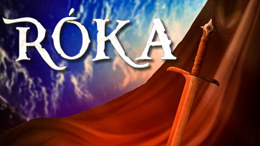
Made with Unity (C#)
Róka is a short action platformer game inspired by Metroidvanias like Hollow Knight and Ori,
made together with a group of three art students and one other software developer as a group project.
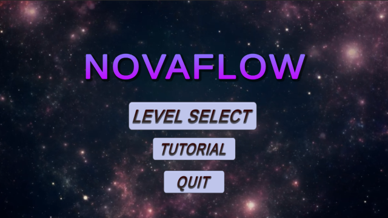
Made with Unity (C#) + Premiere Pro and Photoshop for the assets.
Novaflow. is a Guitar Hero / Friday Night Funkin' inspired rhythm game made by myself for SintLucas' SHINE project.
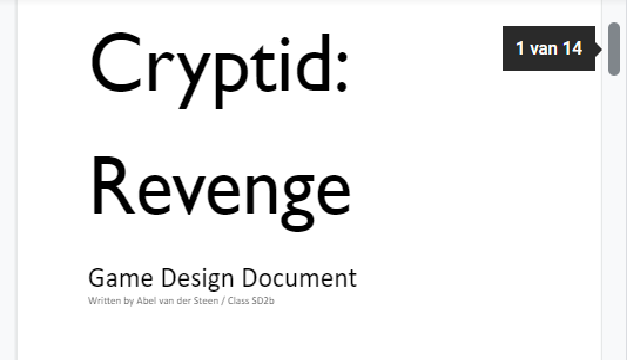
Made with MS Word and Photoshop
Cryptid: Revenge is a Game Design Document made for the exam of our Game Design class featuring all subjects
you'd expect to find in a GDD like the MDA and Formal Elements. Yes, I passed the exam.
Made with Unity (C#)
For SintLucas' Ambition Project, I attempted to make a JRPG-like turn-based battle system. Suffice to say: I bit off
more than I could chew.
Made with Photoshop, Krita and FL Studio.
Here you'll find all the things aside from my software development career, the things that make me stand out
and give me that extra pazazz you won't find in the others in this field of work.
Made with Unity (C#)
Róka is an action-platformer game about a small fox exploring a vast underground, encountering a deadly foe along the way.
The game features both a chase sequence and a boss fight, alongside movement/combat options like wall jumping, shooting
with a magic crossbow and summoning a piercing light to act as a melee attack.
My Contributions
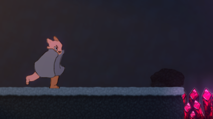
Player
Most of the player-controlled mechanics like moving, (wall-)jumping, attacking, HP and healing were made by me.
This also includes the camera-controller and camera boundaries, made a lot easier with the help of Cinemachine.
Level
Using Unity's tileset system, I designed, constructed and decorated the level. I also coded and placed the spike hazards
around the level.
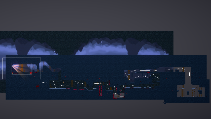
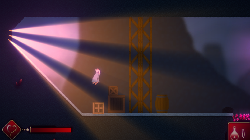
Lighting
Using Unity's URP systems, I made all the lighting and post-processing effects you see in the game. It's not much, but it really adds
to the atmosphere of the game and it wouldn't be the same without it.
Assets
While I didn't make most the assets for the game, I directed and helped with a lot of it. Most questions about the style and look of everything
came to me, and I was happy to help point the artists in the right direction. Besides this, I also had to import most of the animations and tilesets.
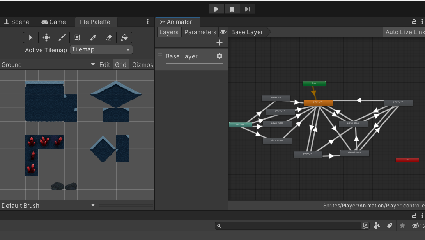
Made with Unity (C#), Premiere Pro and Photoshop
Novaflow is a rhythm game similar to games like Friday Night Funkin' and Guitar Hero, made by myself for SintLucas' SHINE project.
The goal of SHINE was to create something that's a culmination of what I learned in the first year of Software Development, and I definitely reached that goal.
Features
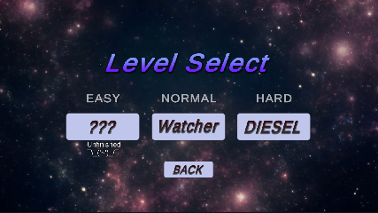
Menu
The game features a fully complete menu, featuring both a level select screen leading to two complete levels and a small tutorial screen.
Both levels' music was used with full permission, the first even being made by myself. Since then, I've already improved my composition skills,
so be sure to check the Hobbyist Projects modal if you're interested.
Level
The game features two complete levels, each carefully made to match the song's beat. You're able to hit and miss each beat, and you get more points
based on how close to the center of the beat you were. There is also a score and max combo counter in the bottom left of the screen to see how you're doing.
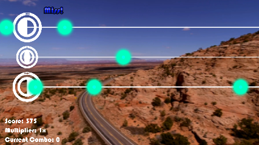
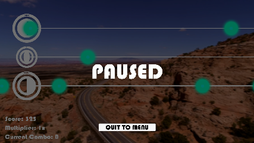
Pause
By pressing escape, you can pause the game mid-level and return to the menu using the button. This is completely bug-free, and can be used without
hesitation if you want to stop the game.
End Screen
After finishing the level, you are presented with an overview of how you did and a final score, along with whether you made the "goal" of the level.
This "goal" is pretty redundant, but it's the only objective in the game besides beating someone else's score. In the end screen, you can see exactly
how many notes you missed, hit, how well you hit them, etc.
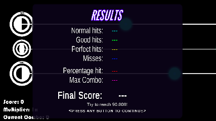
Made with MS Word and Photoshop
Cryptid: Revenge is a game concept created for my Game Design exam. I could choose between three subjects
(all being superhero themed) and I chose the second: "Fighting like Spider-man." So, I went to work, and eventually
came up with Cryptid: Revenge, a side-scrolling action-platformer inspired by Metroidvanias like Ori and the Will of the Wisps.
Read it yourself
Made with Unity / C#
“A delayed game will eventually be good, but this quote is really overused stop saying this every time a game is delayed
yet still releases unapologetically bad.
What was I saying?”
– Shigeru Miyamoto
This was my attempt at making a JRPG Battle System, and suffice to say: I bit off more than I could chew at that point.
I only had half a year of programming experience and greatly underestimated how much coding goes into a simple turn-based
battle system, but it does a good job at showing my strengths and weaknesses. While being a practically impossible task at
the time, I still made sure to think ahead on all the placeholders and mechanics so I could still turn it into something
better if I needed to. The block and flee buttons don’t work, and there is no start- or end-screen, so while I missed a lot
of goals I wanted to reach, I definitely learned a lot from my mistakes.
The assignment was themed around ambition, and I think I at least hit that mark with this basic game. I love turn-based
RPGs and can say with zero doubt I will attempt this endeavor again in the future, so I’m excited to see my improvement
over the years!
Made with Photoshop, Krita and FL Studio
While these projects aren't directly linked with my software development career, if you're looking for just a slight deviation or
are just interested in my creative capabilities it may still be good to check these out!
Features
Menu
The game features a fully complete menu, featuring both a level select screen leading to two complete levels and a small tutorial screen.
Both levels' music was used with full permission, the first even being made by myself. Since then, I've already improved my composition skills,
so be sure to check the Hobbyist Projects modal if you're interested.
Level
The game features two complete levels, each carefully made to match the song's beat. You're able to hit and miss each beat, and you get more points
based on how close to the center of the beat you were. There is also a score and max combo counter in the bottom left of the screen to see how you're doing.
Pause
By pressing escape, you can pause the game mid-level and return to the menu using the button. This is completely bug-free, and can be used without
hesitation if you want to stop the game.
End Screen
After finishing the level, you are presented with an overview of how you did and a final score, along with whether you made the "goal" of the level.
This "goal" is pretty redundant, but it's the only objective in the game besides beating someone else's score. In the end screen, you can see exactly
how many notes you missed, hit, how well you hit them, etc.